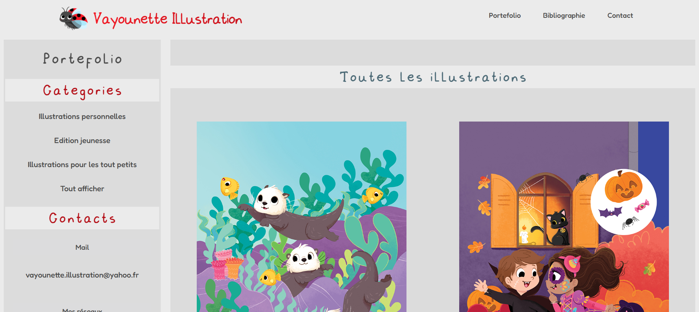
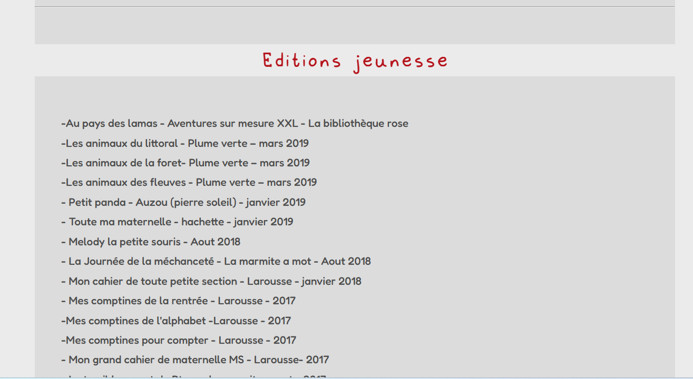

Portefolio BTS SIO
Création d'un site vitrine (en construction)

Répondre aux incidents et aux demandes d'assistance et d'évolution
Traiter des demandes concernant les applications
Développer la présence en ligne de l'organisation
Participer à l'évolution d'un site Web exploitant les données de l'organisation

Travailler en mode projet
Analyser les objectifs et les modalités d'organisation d'un projet
Planifier les activités